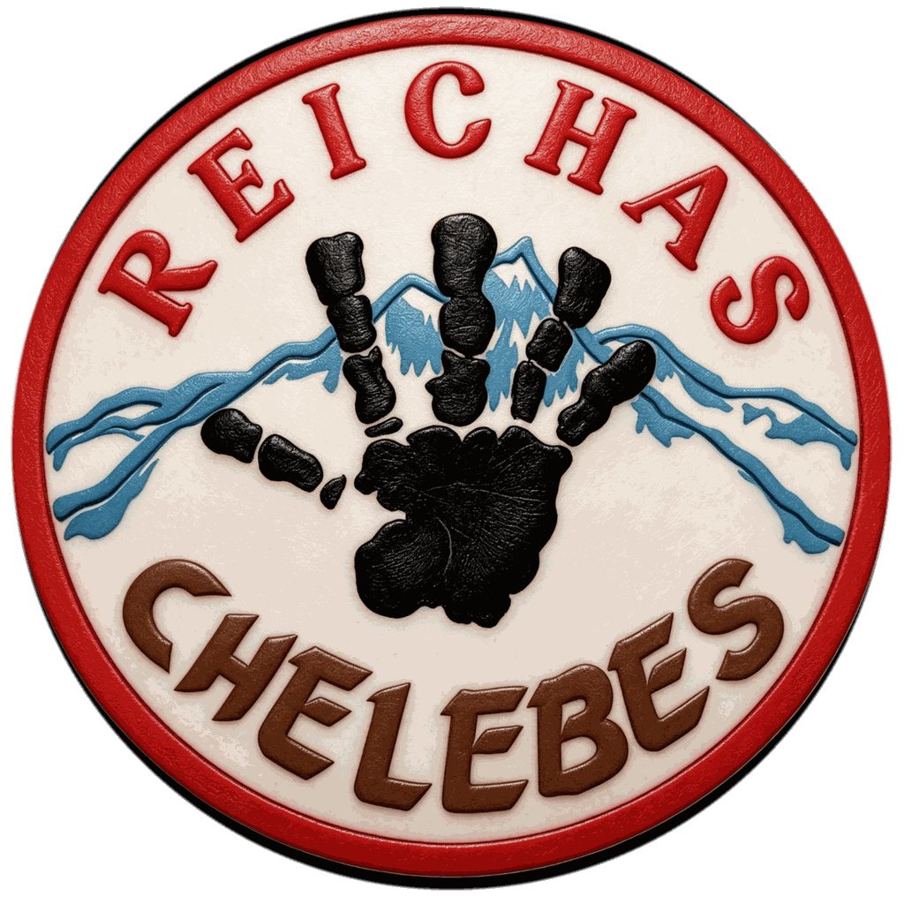

JEJAK YANG AKAN SELALU NAMPAKJejak yang Sudah Terlewati.
Kumpulan foto-foto kenangan, wajah, cerita, dan perjalanan keluarga besar RCS.CBS HOPE. Sentuh foto untuk memperbesar dan menghidupkan kembali momennya.
Membuka jejak foto kenangan…